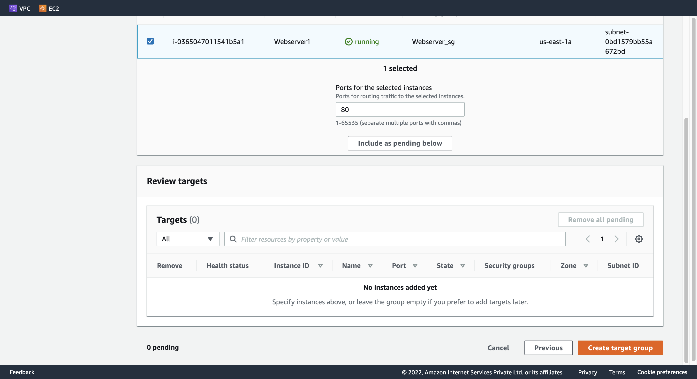
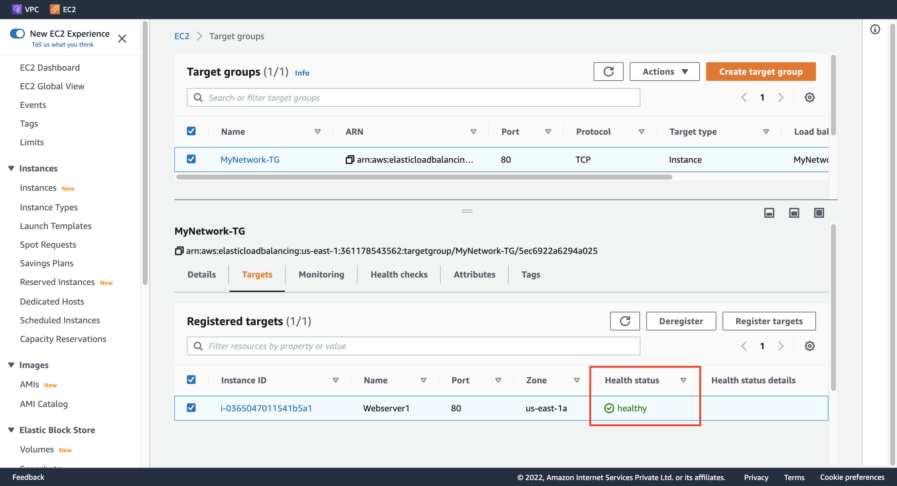
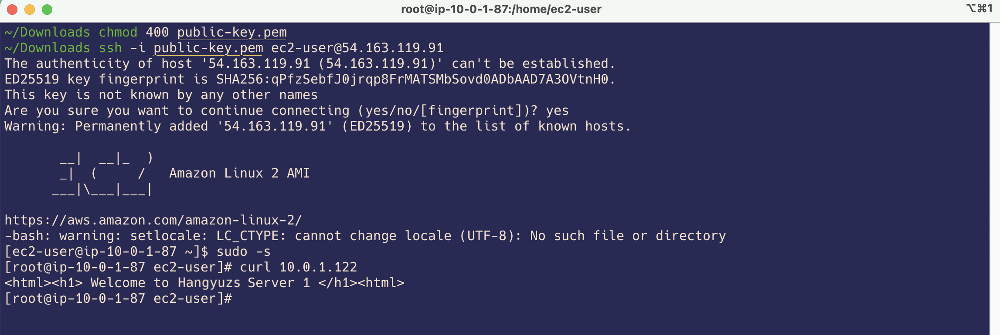

AWS - How to implement end to end VPC Endpoint service#
VPC Endpoint について#
VPC Endpoint とは#
異なる VPC、または異なるリージョンに配置された AWS サービス同士の通信を、インターネットを経由することなく Amazon のネットワーク内で繋ぐサービス。
VPC Endpoint の機能#
Interface Endpoint、Gateway Load Balancer Endpoint と Gateway Endpoint の3つの機能が提供されている。
Interface Endpoint: VPC内にインターフェイスを設置して、インターネットゲートウェイを介さずに、VPC外(AWS通信網内)のサービスにアクセスするための機能。
Gateway Load Balancer Endpoint: サブネットの IP アドレス範囲のプライベート IP アドレスを持つ Elastic Network Interface、トラフィックをインターセプトし、Gateway Load Balancer を使用して設定したネットワークまたはセキュリティサービスにルーティングするエントリポイントとして機能。
Gateway Endpoint: VPCにゲートウェイ（門）を設置することで、インターネットを介さずに、VPC内のサービスとVPC外（AWS通信網内）のサービスの通信を実現する機能。(AmazonS3 または DynamoDB のいずれかに向かう)
各種 VPC Endpoint の使用料金#
-
Interface Endpoint
Gateway Load Balancer Endpoint
料金なし
Gateway Endpoint
VPC Endpoint を利用するメリット#
実質的なインターネットとの出入口を封鎖して、セキュアな経路が実現できる。IGW(Internet Gateway)、NATGW が不要になる。
費用対効果。時間課金は無料か1/6に削減できる。上記、「各種 VPC Endpoint の使用料金」を確認してもらえればわかると思われている。東京リージョンで1時間あたり Interface Endpoint の使用料金は、＄0.014 になっており、それに対して、NATゲートウェイの場合、＄0.62 である(同じ東京リージョンで1時間に処理データ1GBあたり)。
VPC Endpoint 利用シーン#
ユーザーは多くのVPCを管理している場合、プライベートサブネットにあるリソースからAWSのリソースにインターネットを経由せず、セキュアにアクセスする。また、大量に S3 や DynamoDB と通信が発生する場合、VPC Endpoint を使ったら、費用対効果が高くなる。
実践デモ - VPC Endpoint で 2つの VPC 間にエンドツーエンドの接続を設定する#
Required Time: 1h30m
Architecture#
こちらの構築図で VPC Endpoint の実践デモを作成してみよう。
Step 1. Create a service provider VPC#
Name tag: Service_Network
IPv4 CIDR: 20.0.0.0/16

Step 2. Create and attach an IGW#
1. Create Service IGW#
Name tag: Service_IGW

2. Attach Service IGW#
Available VPCs: Service_Network
Step 3. Create a Public subnet#
VPC ID: (プールダウンから選択) Service_Network
Subnet name: Service_Public_subnet
Availability Zone: us-east-1a
IPv4 CIDR block: 20.0.1.0/24
Step 4. Create a Public Route Table and associate it with the subnet#
1. Create Service Public Route Table#
Name tag: Service_PublicRT

2. Associate Route Table with Service Public subnet#
VPC: (一覧から選択) Service_Network

Step 5. Add the public Route in the Route table#
Destination: 0.0.0.0/0
Target: (一覧から選択) Internet Gateway
Step 6. Create an EC2 Instance#
1. Configure Instance Detail(Subnet)#
Network: Service_Network
Subnet: Service_Public_subnet
Auto-assign Public IP: Enable
2. Configure Advanced Details#
User data:
#!/bin/bash sudo su yum update -y yum install httpd -y systemctl start httpd systemctl enable httpd echo "<html><h1> Welcome to Hangyuzs Server 1 </h1><html>" >> /var/www/html/index.html systemctl restart http
3. Configure Security Group#
Create security group
Security group name: Webserver_sg
Description: Security group for Webserver
Add Inbound security groups rules
rule 1
Type: ssh
Source type: Anywhere
rule 2
Type: HTTP
Source type: Anywhere
rule 3
Type: HTTPS
Source type: Anywhere

4. Launch instance#
Step 7. Create a Network LoadBalancer#
1. Configure LoadBalancer#
Load balancer name: MyNetwork-LB
Schema: Internet-facing
Ip address type: IPv4
VPC: Service_Network
Mappings: us-east-1a
Subnet: Service_Public_subnet
Listeners and routing:
Protocol: TCP
Port: 80
Default action: 下記 2. Create target group を参照。

2. Create target group#
Basic Configuration: Instances
Target group name: MyNetwork-TG
Protocl: TCP
Port: 80
VPC: Service_Network
Interval: 10 seconds


3. Register targets#
Webserver1 を選択し、「Include as pending below」をクリックして、「Create target group」を押す。



4. DNS name#
重要: Target group に遷移して、Targets タブのほう、Health Status が healthy になるのを待つ。

DNS name に記載してある A Record をコピーして、ブラウザ上で確認する。下記のように表示される。
Welcome to Hangyuzs Server 1

Step 8. Create an Endpoint service#
Load balancer name: MyNetwork-LB のチェックを入れる。
Additional settings: 「Acceptance required」 のチェックを入れる。

Service name をメモする。

Step 9. Create a customer VPC#
Name tag: Customer_Network
IPv4 CIDR: 10.0.0.0/16

Step 10. Create and attach an Internet Gateway#
1. Create Customer IGW#
Name tag: Customer_IGW

2. Attach Customer IGW#
Available VPCs: Customer_Network

Step 11. Create a Public subnet#
VPC ID: (プールダウンから選択) Customer_Network
Subnet name: Customer_Public_subnet
Availability Zone: us-east-1a
IPv4 CIDR block: 10.0.1.0/24

Step 12. Create a Public Route Table and associate it with the subnet#
1. Create Customer Public Route Table#
Name tag: Customer_PublicRT

2. Associate Route Table with Customer Public subnet#
VPC: (一覧から選択) Customer_Network
Step 13. Add the public Route in the Route table#
Destination: 0.0.0.0/0
Target: (一覧から選択) Internet Gateway

Step 14. Create an EC2 Instance#
1. Configure Instance Detail(Customer)#
Network: Customer_Network
Subnet: Customer_Public_subnet
Auto-assign Public IP: Enable
2. Configure Security Group#
Create security group
Security group name: Customer_EC2_SG
Description: Security group for Customer EC2
Add Inbound security groups rules
rule 1
Type: ssh
Source type: Anywhere
rule 2
Type: HTTP
Source type: Anywhere
3. Launch instance#
Customer EC2 の IPv4 アドレスをメモする。
Step 15. Create a VPC Endpoint#
1. Configure Endpoint#
Security category: Other endpoint services
Service settings:
Step 8 でメモした Service name をこちらにペストする。
Verify service する。
VPC: (プールダウンから選択) Customer_Network
Security groups: (一覧から選択) Customer_EC2_SG


Endpoint のステータスを確認する。

2. Accept endpoint connection request#
Endpoint Connections を設定して、Endpoint のステータスが Available になるまで待つ。


Endpoint のIPv4 アドレスをメモする。

Step 16. Test the connectivity#
SSH で Customer EC2 にアクセスして、curl で接続状況を確認する。
ssh -i {keypair}.pem ec2-user@{Cusotmer_EC2_IPv4_Address}
curl {Endpoint_IPv4_Address}
下記の内容が返される。
<html><h1> Welcome to Hangyuzs Server 1 </h1></html>

Step 17. Delete AWS Resources#
リソースを削除する必要がある場合、下記の順番で行えればきれいに削除できる。
EC2 Instance (2つ)
VPC Endpoint
Endpoint Service
NLB
Target Groups